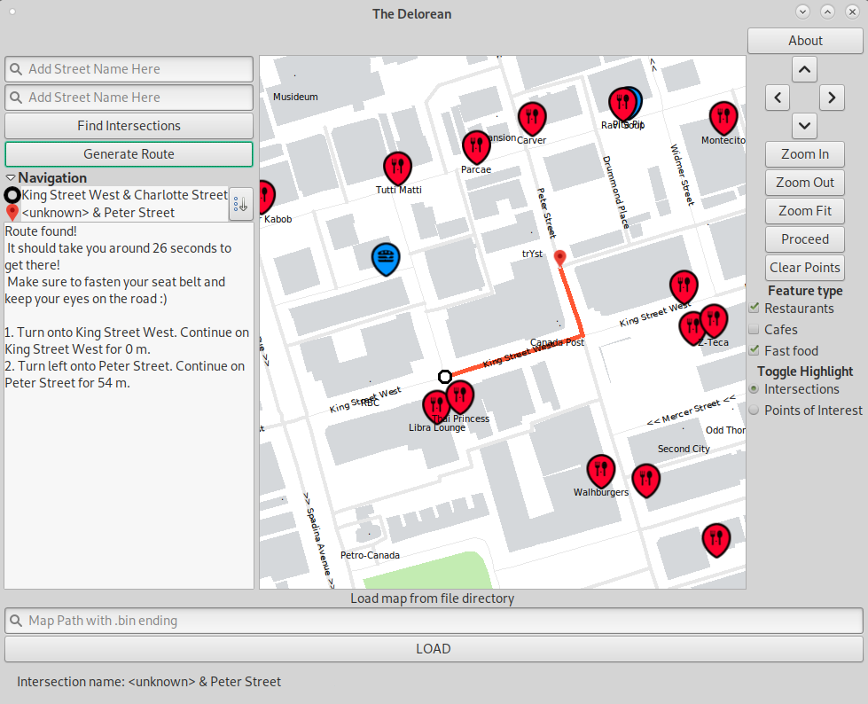
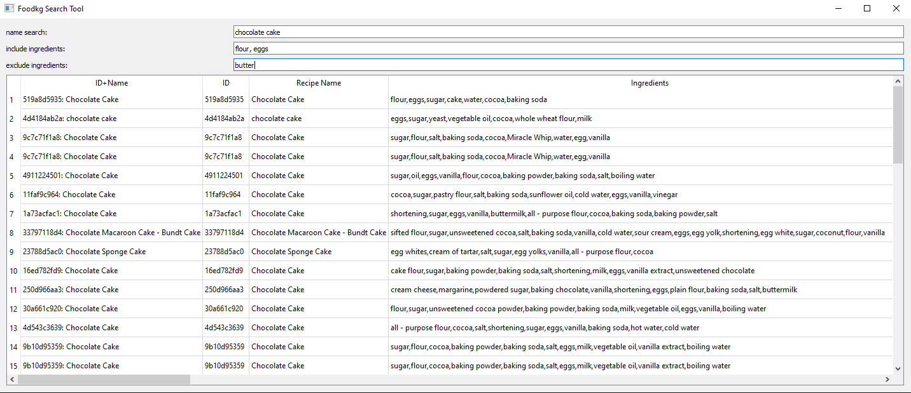
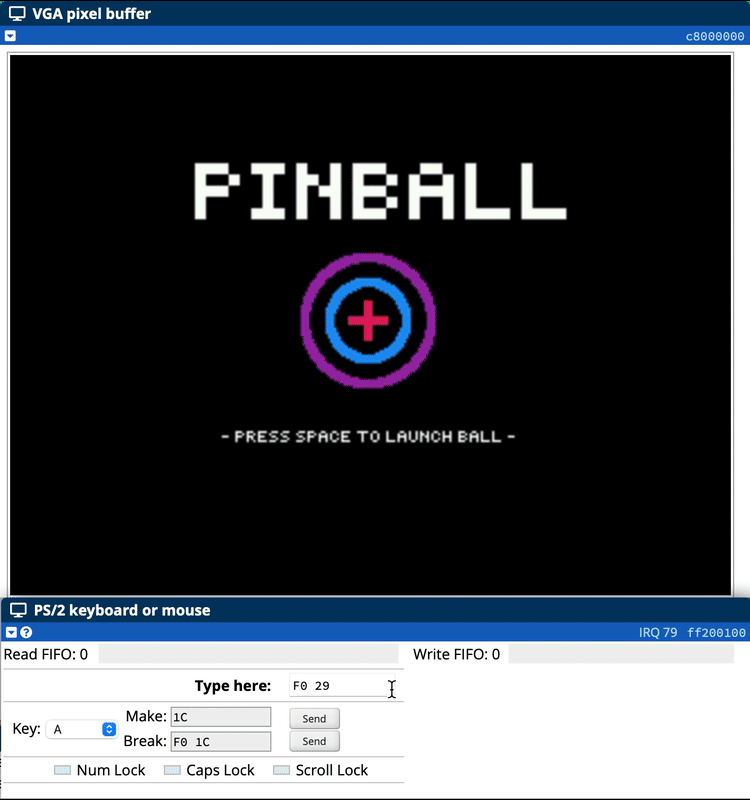

About me
My name is Yixin and I'm a computer engineering new grad from the University of Toronto.
I love computer graphics!
Experience
Research Fellow, Summer Geometry Initiative at the Massachusetts Institute of Technology (Jul 2024 – Aug 2024)
Research fellowship consisting of short research projects in groups of 5 at Summer Geometry Initiative. Main project: “Approximating Surfaces with Meshes” - supervised by Nicholas Sharp, Nvidia.
- Designed and implemented a surface approximation algorithm by using random sampling.
- Ran and recorded experiments to determine best hyperparameters, using the chamfer distance error metric.
- Developed an interactive 3D user interface to visualise and identify areas of improvement, using Python.
Software Engineer, ModiFace (May 2023 – Jun 2024)
Full time internship on developing a real time makeup and hairstyle virtual try-on iOS application and SDK at a startup.
- Integrated CoreML and ARCore models into the iOS application and SDK, improving the realism of the hair and makeup rendering, resulting in a patented software.
- Spearheaded the migration of the in-house makeup rendering API from v4 to v5 in the iOS SDK.
- Implemented the video recording and saving feature in the iOS application using Swift and Objective C, multithreading it with the physics simulation, enhancing app stability under concurrent workloads.
- Developed the 3D simulation algorithm with C++ to simulate the physical movement of over 10,000 vertices in real time, alleviating the application’s runtime bottleneck by 15%, resulting in a research paper submission.
Research Intern, Data-Driven Decision Making Lab at the University of Toronto
Full time research internship on multi-aspect natural language information retrieval.
- Generated a natural language query multi-aspect matching dataset with 500 entries, resulting in a SIGIR publication.
- Benchmarked the dataset against natural language models (BERT, TAS-B, GPT-3), using Python and HuggingFace .
Projects
TailorSwift

Recipe search engine

Pinball Game/h1>

The Delorean
Contact
{
"Phone":"+1 (647) 8195 185",
"Email": "y.lok@mail.utoronto.ca",
"Linkedin": "www.linkedin.com/in/yixin-lok",
"Github": "https://github.com/yixinlok"
}